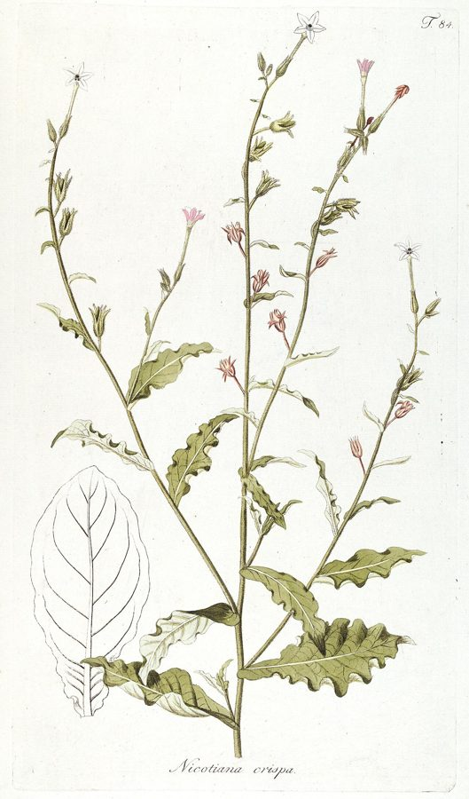

बन तंबाकूWild Tobacco
Nicotiana plumbaginifolia · Solanaceae · FLR-0366

- Scientific name वैज्ञानिक नाम
- Nicotiana plumbaginifolia Viv.
- Family कुल
- Solanaceae
- Hindi हिंदी
- बन तंबाकू
- Local names स्थानीय नाम
- ban tambaku, jangli tambaku, wild tobacco, plumbago tobacco
- Status here यहाँ की स्थिति
- naturalized
- Movement आवागमन
- Resident, here all year
- Known from कहाँ दर्ज
- Others have published records from the wider Awadh–Purvanchal plain, none yet from Basti–Ayodhya अवध–पूर्वांचल से दूसरों के प्रकाशित अभिलेख, बस्ती–अयोध्या से अभी नहीं
- IUCN IUCN
- not evaluated
- Review समीक्षा
- not yet reviewed
When to look कब देखें
Season not recorded. मौसम दर्ज नहीं।
Uses and possibilities उपयोग और संभावनाएँ
Drawn from the documented uses in the profile below, where each is labelled traditional, current or a research lead. All uses →
Tell it apart from इनसे अलग पहचानें
बन तंबाकू / Wild Tobacco
Nicotiana plumbaginifolia Viv. — Solanaceae
बन तंबाकू (जंगली तंबाकू) — यह सर्दियों और वसंत के मौसम में खेतों की मेड़ों, बागों और नमी वाली खाली जमीनों पर उगने वाला एक आम खरपतवार है। यह मूल रूप से उष्णकटिबंधीय अमेरिका का पौधा है जो अब भारत के मैदानी भागों में पूरी तरह रच-बस गया है। शुरुआत में इसकी पत्तियां जमीन पर चक्राकार फैलती हैं, फिर बीच से एक पतला सीधा तना निकलता है जिस पर लंबी नली जैसे सफेद-हरे फूल खिलते हैं। ये फूल शाम ढलने पर खिलते हैं और हल्की मीठी खुशबू बिखेरते हैं, जिससे रात के पतंगे आकर्षित होते हैं।
Quick Identification त्वरित पहचान
| Feature | Description |
|---|---|
| Habit | Erect slender glandular-pubescent annual herb with basal leaf rosette |
| Leaves | Basal leaves obovate-spathulate, cauline leaves sessile, oblong-lanceolate with undulate margins |
| Inflorescence | Lax terminal racemes or panicles with slender glandular pedicels |
| Flowers | Narrow salver-shaped nocturnal blossoms, greenish-white or pale purplish with long slender tubes |
| Fruit | Small ovoid two-valved capsule enclosed within persistent calyx teeth |
| Odour | Mildly fetid when crushed, emitting sweet nocturnal fragrance from open flowers |
Field tip: Look in moist winter fallows and shaded brick rubble for an erect sticky-hairy weed with a basal rosette of crinkly leaves and slender long-tubed white flowers that open at dusk.
हिंदी: जाड़े के मौसम में नमी वाले खेतों और बागों में उगने वाला यह पौधा अपनी चिपचिपी रोएंदार पत्तियों और शाम को खिलने वाले लंबी नली जैसे सफेद फूलों से पहचाना जाता है।
Morphology आकारिकी
| Feature | Description |
|---|---|
| Habit | Slender erect annual herb clothed with sticky glandular hairs |
Nicotiana plumbaginifolia is an erect annual herb with sticky, glandular-pubescent stems. Seedlings first establish a ground-hugging basal rosette of obovate or spathulate leaves with narrowed, petiole-like bases and distinctly undulate or crinkled margins. From the center of this rosette arises a slender, erect, flexuous flowering stem that branches sparingly in its upper half. The cauline leaves are alternate, sessile, oblong-lanceolate or elliptic, with acute or obtuse tips and clasping or semi-amplexicaul bases. All vegetative parts are clothed in fine viscid glandular hairs that release a faint solanaceous odour when bruised.
The inflorescence forms a loose, elongated, terminal raceme or racemose panicle. The flowers are nocturnal, borne on short glandular pedicels that nod slightly in bud. The calyx is tubular-campanulate, deeply cut into five unequal, linear-lanceolate, erect-patent teeth. The corolla is salverform, with an exceptionally long, narrow, greenish-white cylindric tube that expands into a five-lobed limb; the lobes are ovate, acute, creamy-white on the upper face and faintly suffused with purple or green on the exterior. The fruit is an ovoid or subglobose capsule enclosed within the persistent enlarged calyx teeth, dehiscing by two apical valves to release numerous microscopic, reticulate, dark brown seeds.
हिंदी: यह पौधा सीधा और चिपचिपा होता है। नीचे के पत्ते जमीन पर फैले होते हैं और ऊपर के पत्ते तने से चिपके रहते हैं। इसके फूल पतली लंबी नली जैसे होते हैं जो आगे चलकर पांच पंखुड़ियों में खुलते हैं। फल एक छोटा गोल संपुट होता है जिसमें सैकड़ों बारीक बीज भरे रहते हैं।
Behaviour & Ecology व्यवहार और पारिस्थितिकी
Wild tobacco is an adaptable ruderal colonizer of disturbed, moist alluvial soils, canal spoil banks, and winter crop borders across northern India. It relies on a specialized nocturnal pollination syndrome: its long, slender corolla tubes open around dusk, emitting a light sweet scent that guides crepuscular and nocturnal hawkmoths (sphingids) possessing sufficiently long proboscises to reach the basal nectar.
During the daytime, the corolla lobes remain partially closed or crumpled to reduce moisture loss and protect pollen from non-pollinating floral scavengers. However, small native halictid bees and hoverflies frequently visit the flower mouth in early morning to scavenge surplus pollen grains. The tiny dust-like seeds are produced in massive numbers; when the mature dry capsule splits open, the stiff wind rattles the tall stem, shaking seeds into air currents and storm runoff.
हिंदी: इसके फूल शाम के समय खुलते हैं और खुशबू छोड़ते हैं जिससे रात के पतंगे इनका रस चूसने आते हैं। दिन में फूल मुरझाए से रहते हैं। इसके बहुत बारीक बीज हवा और पानी के साथ तेजी से फैलते हैं।
Life Cycle / Phenology जीवन चक्र
Seeds germinate with the arrival of cooler temperatures and receding moisture in October and November. The juvenile plant spends several weeks as a prostrate leafy rosette, building up root reserves while avoiding autumn heat.
Stem elongation commences in December, with flowering extending continuously through winter and spring from January to April. Capsules mature within three to four weeks of pollination, sequentially ripening from lower branches upwards. By the onset of fierce dry summer winds in May, the entire plant dries out, shrivels, and dies, leaving a prolific seed bank in the soil that lies dormant through the hot summer and monsoon floods.
हिंदी: कार्तिक-अगहन की ठंड में इसके पौधे उगते हैं। पूस से लेकर चैत तक इस पर लगातार फूल और फलियां आती रहती हैं। बैसाख की तेज धूप में यह सूख जाता है और इसके बीज जमीन में पड़े रहते हैं।
Associated Species / Interactions सहजीवी प्रजातियाँ
Nicotiana plumbaginifolia is a frequent weed in cultivated fields and orchards, often found alongside cultivated Mustard and under the canopy of Mango (Mangifera indica).
Early in the morning, Asian Honey Bees (Apis cerana) visit the open corollas to collect pollen. The dense winter rosettes provide ground foraging habitat and seed foraging grounds for the Baya Weaver (Ploceus philippinus) and wintering larks.
हिंदी: यह सरसों के खेतों और आम के बागों के किनारों पर आम मिलता है। सुबह के समय भारतीय मधुमक्खियां इसके फूलों से पराग एकत्र करती हैं और बया चिड़िया इसके आसपास दाना चुगती है।
Pests and Diseases कीट और रोग
Because of toxic pyridine alkaloids (including nicotine and anabasine) distributed throughout its tissues, wild tobacco foliage is completely shunned by grazing cattle, goats, and most generalist insect herbivores.
However, it serves as an alternative host for several economically important agricultural pests and diseases, including tobacco whiteflies (Bemisia tabaci) and aphid vectors. It frequently acts as an overwintering reservoir for tobacco mosaic virus (TMV) and potato leaf roll virus, which can spread to neighboring tomato, potato, and brinjal crops.
हिंदी: पत्तियों में जहरीला निकोटिन होने के कारण मवेशी और बकरियां इसे नहीं खातीं। लेकिन इस पर सफेद मक्खी और फफूंद पनप सकती है जो पास के टमाटर और आलू की फसल में बीमारी फैला सकती है।
Agricultural / Human Relevance कृषि प्रासंगिकता
In agricultural systems, Nicotiana plumbaginifolia is regarded as a minor to moderate weed of winter rabi crops, vegetable gardens, and irrigation channels. While it competes for moisture and nutrients in nurseries, its presence on bare fallows provides temporary ground cover that suppresses winter dust and binds surface silt against erosion.
Traditional rural practices sometimes utilize aqueous leaf extracts as a home-made botanical insecticide to wash cattle infested with ticks and lice, or to spray over kitchen gardens against soft-bodied caterpillars; this is a record of folk practices, not modern agricultural advice. The plant contains toxic alkaloids and is unfit for human or animal consumption.
Traditional: Aqueous leaf wash used in villages as a folk insecticide against cattle parasites.
Today: Agricultural weed and reservoir host for crop viruses; useful indicator of moist alluvial soils.
Research direction (a lead, not a result): Extraction and biocidal profiling of leaf pyridine alkaloids as biodegradable organic pesticides.
हिंदी: किसान इसे खरपतवार मानते हैं क्योंकि यह फसलों की खाद-पानी खींचता है। पुराने समय में इसके पत्तों को पानी में उबालकर पशुओं के जुएं-चींचड़ मारने के लिए देसी कीटनाशक बनाया जाता था।
Expected Locally स्थानीय रूप से अपेक्षित
Not a field record. Written from published accounts for eastern Uttar Pradesh. No confirmed local sighting yet — if you have seen it, that is what the atlas needs.
अभी तक स्थानीय पुष्टि नहीं। यह विवरण प्रकाशित स्रोतों से है, किसी अवलोकन से नहीं।
In eastern Uttar Pradesh, Nicotiana plumbaginifolia is expected along railway ballast, ditch banks, winter fallow plots, moist village paths, and damp orchard floors in Basti and neighbouring districts. GBIF holds published records from across the wider Gangetic plain. A confirmed first record requires a clear photograph with place and date submitted through the project portal.
हिंदी: बस्ती और आसपास के जिलों में जाड़े के दिनों में बागों, नालियों और नम खाली खेतों में यह आसानी से दिख जाता है। इसकी तस्वीर खींचकर एटलस पर अवश्य दर्ज करें।
Distribution वितरण
Global range: Native to tropical Central and South America and the Caribbean; widely naturalized across the tropical and subtropical regions of Asia, Africa, and Australia.
In India: Thoroughly naturalized and widespread throughout the plains of northern, central, and eastern India, especially in the Gangetic basin.
In Uttar Pradesh: Abundant throughout the state in moist agricultural tracts, roadside ditches, and fallows.
In Basti district / eastern UP: Documented as an established winter ruderal weed in floras of the Upper Gangetic Plain and regional checklists.
हिंदी: यह मूल रूप से अमेरिका का पौधा है लेकिन अब पूरे भारत और उत्तर प्रदेश के मैदानी इलाकों में एक आम जंगली खरपतवार बन चुका है।
Research Questions शोध प्रश्न
- To what extent does Nicotiana plumbaginifolia serve as a primary winter reservoir host for tobacco mosaic virus affecting potato and tomato fields in eastern UP? / क्या यह पौधा आलू-टमाटर में वायरस फैलाने का जरिया बनता है?
- Which species of nocturnal hawkmoths (Sphingidae) are the principal effective pollinators of its long-tubed flowers in the Gangetic plain?
- What is the persistence and longevity of its minute seeds within alluvial soil seed banks subjected to summer tillage?
- How do leaf alkaloid concentrations vary across differing soil salinity levels in riverine floodplains?
- Can standardized aqueous extracts of its leaves be developed as effective biopesticides for smallholder vegetable farming? / क्या इसके पत्तों से जैविक कीटनाशक बनाकर किसानों की मदद की जा सकती है?
हिंदी: रात में कौन से पतंगे इसके फूलों पर आते हैं और क्या इसके पत्तों के अर्क से फसलों के लिए सुरक्षित जैविक कीटनाशक तैयार किया जा सकता है?
Similar Species मिलती-जुलती प्रजातियाँ
| Species | How to tell apart | हिंदी | |
|---|---|---|---|
| [[sage_weed | Salvia plebeia]] | Aromatic herb with square stems, two-lipped lilac flowers, and dry non-sticky leaves | कमरकस |
| [[indian_borage | Trichodesma indicum]] | Coarse herb with bristly stinging hairs and broad nodding pale blue flowers | छोटा कुलफा |
Field rule: Sticky glandular-hairy stems, crinkly basal leaves, and long slender greenish-white tubular flowers that open at dusk identify Nicotiana plumbaginifolia.
हिंदी: कमरकस (साल्विया) में चौकोर तना और दो ओंठ वाले फूल होते हैं, जबकि बन तंबाकू में लंबी नली जैसे सफेद फूल और चिपचिपे रोएं होते हैं।
Taxonomy & Classification वर्गीकरण
Original description. Described by the Italian botanist Domenico Viviani in 1802 in Elenchus Plantarum Horti Botanici J. Car. Dinegro, p. 26, t. 1.
Subspecies. Monotypic — no subspecies are currently recognised.
Family and order placement. Placed in the nightshade family Solanaceae (subfamily Nicotianoideae, tribe Nicotianeae), order Solanales.
Phylogenetic notes. Nicotiana plumbaginifolia is a diploid species belonging to section Alatae, known in plant genetics as a model organism for somatic hybridization and organelle genetics.
IUCN status rationale. Not evaluated (not_evaluated) by IUCN. The species is an aggressively colonizing, highly successful naturalized weed globally.
हिंदी: डोमेनिको विवियानी ने 1802 में इसका वैज्ञानिक नामकरण किया था। यह आलू और बैंगन के कुल (सोलनेसी) का पौधा है।
Photo Gallery फोटो गैलरी
No photos yet — add field photos to media/species/wild_tobacco/ and run node scripts/sync_photos.js.
Photos needed आवश्यक फोटो
- [ ] Basal rosette of leaves in early winter (जमीन पर फैली पत्तियों का चक्र)
- [ ] Upright flowering stem showing glandular hairs (चिपचिपा रोएंदार तना)
- [ ] Slender long-tubed flower open at dusk (शाम को खिला लंबा नलीदार फूल)
- [ ] Mature dehiscing capsule enclosed in calyx (बीजों वाला सूखा संपुट)
References संदर्भ
- Viviani, D. (1802). Elenchus Plantarum Horti Botanici J. Car. Dinegro, p. 26.
- Hooker, J. D. (1885). The Flora of British India, Vol. 4. L. Reeve & Co., London.
- Kirtikar, K. R. & Basu, B. D. (1933). Indian Medicinal Plants, 2nd ed. Lalit Mohan Basu, Allahabad.
- GBIF Occurrence Data — Nicotiana plumbaginifolia, India (2025).
Source file: species/flora/weeds/wild_tobacco.md